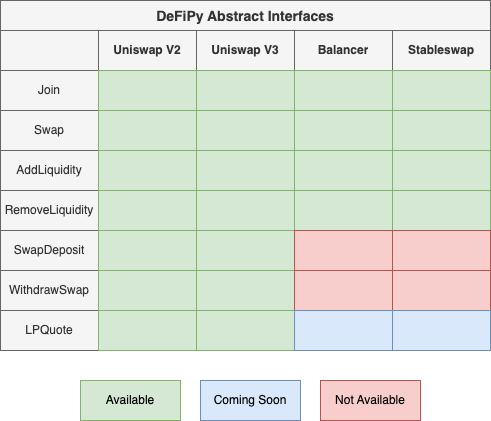

Usage
The two main ways to work with DeFiPy are either through the Primitive and/or Abstract API.
Primitive Interface
As the DeFiPy backbone consists of refactors of various DeFi (solidity) frameworks to analyze mock DeFi setups using Python, we’ve done our best to maintain the integrity of the original solidity interface in the pythonized version that we offer. This option is best suited for solidity developers who are familiar with working with solidity interface, and want to use DeFiPy as an additional support resource.
Abstract Interface
This option is best suited for analysts who want to streamline their work to implement DeFi analytics on the various protocols that are made available. The following is an overiew of the available abstract interface objects. To learn more, you can visit Tutorials and/or API references in the left menu.
Object descriptions are as follows:
Join(): Join token amounts amounts to poolSwap(): Swap exact token x for token y, and vice versaSwapDeposit(): Single-sided deposit; deposit exact x or y by coming to pool with just one token from trading pair to make a deposit. Works by calculating portion to swap, performs swap to aquire other token, and performs 50/50 deposit with other token and remaining portionWithdrawSwap(): Single-sided withdrawal; withdraw exact x or y by leaving pool with desired token from trading pair. Works by calculating portion to withdraw, perform approximate 50/50 withdraw, swap remaining portion then return desired tokenAddLiquidity(): Double-sided deposit; enter one token and will calculate the other amount to perform 50/50 depositRemoveLiquidity(): Double-sided withdrawal; Enter one token and will calculate the other amount to perform 50/50 withdrawalLPQuote(): Quote liquidity pool, via either: (a) token price; (b) LP token amount to token amount; or (c) token amount to LP token amount
Precision
To make DeFiPy usable to the analyst, by default, all output is presented in human form (unless specified). Examples of which include:
Format |
Calculation |
Machine |
Human |
|---|---|---|---|
GWEI |
price*10^18 |
3000000000000000000000 |
3000 |
Q64.96 |
sqrt(price)*2^96 |
4339505179874779672736325173248 |
3000 |
Note
We have implemented a parameter setting to toggle output from human to machine in the event the analyst wants to pipeline their work into any backend development for Uniswap V2 and Uniswap V3
MIT License
Permission is hereby granted, free of charge, to any person obtaining a copy of this software and associated documentation files (the “Software”), to deal in the Software without restriction, including without limitation the rights to use, copy, modify, merge, publish, distribute, sublicense, and/or sell copies of the Software, and to permit persons to whom the Software is furnished to do so, subject to the following conditions:
The above copyright notice and this permission notice shall be included in all copies or substantial portions of the Software.
THE SOFTWARE IS PROVIDED “AS IS”, WITHOUT WARRANTY OF ANY KIND, EXPRESS OR IMPLIED, INCLUDING BUT NOT LIMITED TO THE WARRANTIES OF MERCHANTABILITY, FITNESS FOR A PARTICULAR PURPOSE AND NONINFRINGEMENT. IN NO EVENT SHALL THE AUTHORS OR COPYRIGHT HOLDERS BE LIABLE FOR ANY CLAIM, DAMAGES OR OTHER LIABILITY, WHETHER IN AN ACTION OF CONTRACT, TORT OR OTHERWISE, ARISING FROM, OUT OF OR IN CONNECTION WITH THE SOFTWARE OR THE USE OR OTHER DEALINGS IN THE SOFTWARE.